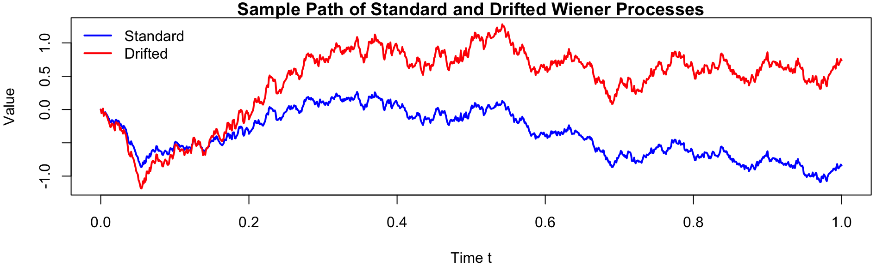
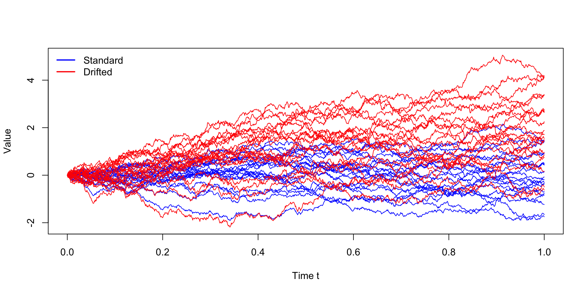
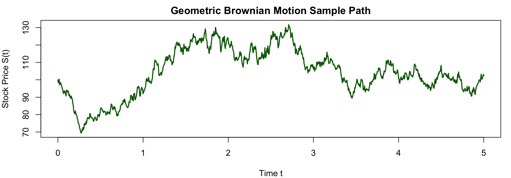
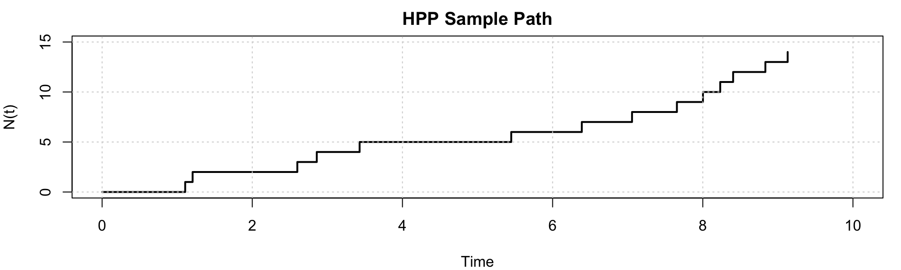
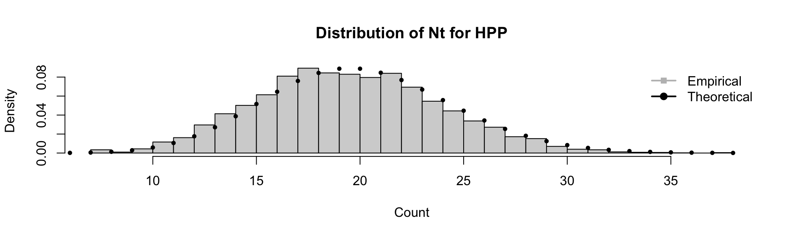
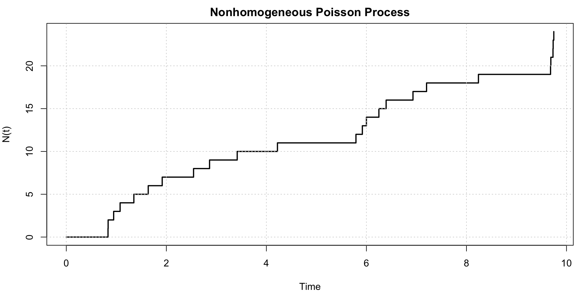
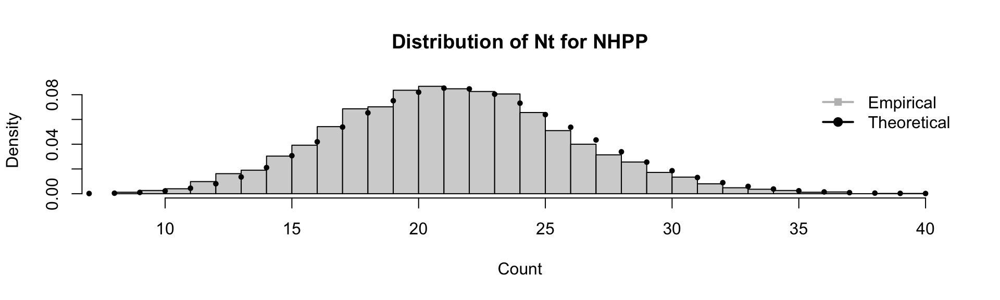
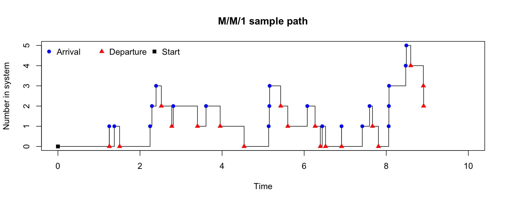
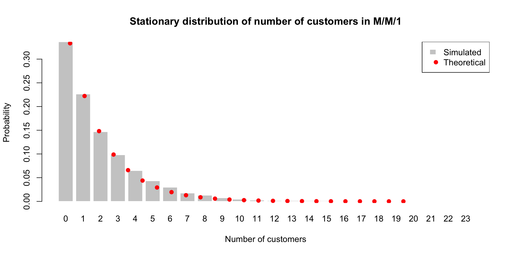

[1] 0 0 0 0 1 0 0 0 0 0 0 0 0 1 0 1 0 0 0 0STAT2005 Computer Simulation
Lecture 7 — Stochastic Modelling
Sam Wiwatanapataphee (275287a@curtin.edu.au)
23 Apr 2026
Goals today
- Part 1: Introduction to Stochastic Process
- Anatomy of a stochastic process
- Examples:
- Bernoulli process
- Random walk
- Brownian motion
- Geometric Brownian motion (GBM)
- Part 2: Poisson Process
- Homogeneous Poisson process (HPP)
- Non-homogeneous Poisson process (NHPP)
- Thinning algorithm
- Part 3: Markov Process and Queueing Theory
- Markov property
- Queueing theory
- Kendall’s notation
- M/M/1 queue
- M/M/c queue
- Case Study: EV charging station
Part 1: Introduction to Stochastic Processes
Motivation: From Random Variables → Processes
So far, we simulated random variables \(\rightarrow\) one outcome
Now, we simulate random processes \(\rightarrow\) evolution over time
This allows us to model dynamic systems with inherent randomness, such as:
- Stock prices
- Population growth
- Environmental systems
- Customer arrivals
A stochastic process is
A collection of random variables indexed by time
\[ \{X_t : t \in T\} \]
where
- \(t\): time index
- \(T\): time index set (discrete or continuous)
- \(X_t\): random variable at time \(t\).
- \(X_t \in S\): state space (discrete or continuous)
Anatomy of a Stochastic Process
The two key dimensions of a stochastic process are:
Index set
| Index set | Discrete-Time | Continuous-Time |
|---|---|---|
| Characteristic | Observed at fixed time steps | Evolves continuously over time |
| Notation | \(T = \{0,1,2,...\}\) | \(T \in [0,\infty)\) or \(T \in \mathbb{R}\) |
| Examples | daily stock prices, number of customers every minute, population size per year | arrival times of customers, radioactive decay, diffusion processes |
State space
| State spac | Discrete State Space | Continuous State Space |
|---|---|---|
| Characteristic | Finite or countable values | Values in an interval |
| Notation | Finite categories: \(X_t \in \{1,...,K\}\) Counts: \(X_t \in \{0,1,2,...\}\) Integer: \(X_t \in \mathbb{Z}\) |
Unrestricted: \(X_t \in \mathbb{R}\) Positive: \(X_t > 0\) Bounded: \(a < X_t < b\) |
| Examples | queue length, number of infected individuals, number of packets in a network | stock prices, temperature, rainfall, waiting time, volatility processes |
Dependence Structure
Unlike independent random variables, stochastic processes often exhibit dependence over time.
Examples:
- Number of customers in a queue at time \(t+1\) depends on the number at time \(t\).
- Stock price at time \(t+1\) depends on the price at time \(t\) (and other factors).
- Temperature at time \(t+1\) depends on the temperature at time \(t\) (and other factors).
The dependence structure of a stochastic process describes
How the random variables \(X_t\) are related to each other across time.
But how do we know whether:
- \(X_{t+1}\) depends on \(X_t\)?
- \(X_{t+1}\) dependes on the whole history \(X_0, X_1, ..., X_t\)?
- or \(X_{t+1}\) is independent of the past?
Dependence Structure (Continue)
The dependence structure can take various forms, such as:
Independence
The future state is independent of the past states.
E.g., a sequence of i.i.d. random variables and Monte Carlo simulations with independent samples.
Markov dependence (memoryless)
The future state depends only on the current state, not on the past states.
E.g., Markov chains, where \(P(X_{t+1} | X_t) = P(X_{t+1} | X_t, X_{t-1}, ...)\).
Autoregressive dependence
The future state depends on a linear combination of past states.
E.g., AR(p) models in time series analysis, where \(X_t = \phi_1 X_{t-1} + \phi_2 X_{t-2} + ... + \phi_p X_{t-p} + \epsilon_t\).
Long-range dependence
The future state depends on a long history of past states.
E.g., fractional Brownian motion, moving average processes, or certain types of time series with long memory.
Stationarity
A stochastic process is stationary if its statistical properties do not change over time. We can say that:
- the process “looks the same” today as it does tomorrow, and as it did yesterday.
- time shifts do not affect the distribution of the process.
This allows us to make predictions and draw conclusions about the process based on past observations (historical data), without worrying about changes in the underlying distribution.
Strict Stationarity
A stochastic process is strictly stationary if all joint distributions are invariant under time shifts:
\[ (X_t, X_{t+1}, ..., X_{t+k}) \stackrel{d}{=} (X_{t+h}, X_{t+1+h}, ..., X_{t+k+h}) \quad \forall t, h, k. \]
where \(\stackrel{d}{=}\) represents equality in distribution.
Weak Stationarity
A process is weakly stationary if:
- \(\mathbb{E}[X_t] = \mu, \forall t\) (constant mean).
- \(\text{Var}(X_t) = \sigma^2 < \infty, \forall t\) (finite variance)
- \(\text{Cov}(X_t, X_{t+k}) = \gamma(k), \forall t,k\) (autocovariance depends only on lag \(k\)).
Examples of Stochastic Processes
In this unit, we will explore some common examples of stochastic processes, including:
Bernoulli process
Random walk
Wiener process
Geometric Brownian motion
Poisson process
Markov process
Bernoulli Process
A Bernoulli process is a sequence of independent Bernoulli trials, where each trial has two possible outcomes (success or failure) with constant probability.
It is a discrete-time, discrete-state stochastic process that models a series of binary events.
Example: Biased Coin Tossing
Simulate tossing a biased coin 1000 times, where the probability of heads (success) is 0.3 and tails (failure) is 0.7.
Although Bernoulli processes have no temporal dependence, they are still stochastic processes because they are indexed collections of random variables.
Random Walk
- Random walk is a simple stochastic process that models a path consisting of a succession of random steps.
Example: Discrete-time, discrete-state random walk
\[ X_0 = 0, \quad X_{t} = X_{t-1} + Z_t = \sum_{i=1}^t Z_i, \quad t = 1, 2, ... \]
where
\[ Z_t = \begin{cases}+1 & \text{with probability } p \\ -1 & \text{with probability } 1-p \end{cases} \]
and \(Z_t\) are i.i.d. random variables.
Path is jagged
Variance grows with time
No smoothness
Wiener Process (Brownian Motion)
Now refine:
Smaller step size
Variance grows with time
No smoothness
Let:
Step size \(\rightarrow \sqrt{\Delta t}\)
Number of steps \(\rightarrow\) increases
Brownian Motion
A continuous-time, continuous-state process \(W_t\) such that:
- \(W_0 = 0\) (starts at zero).
- \(W_t\) has independent increments.
- for any \(0 \leq s < t\), the increment \(W_t - W_s\) is independent of the past.
- \(W_t\) has normally distributed increments
- \(W_t - W_s \sim N(0, t-s)\) for \(0 \leq s < t\).
- \(W_t\) has continuous paths.
Generalised Wiener Process
- If the mean of the increments is non-zero, we can introduce a drift term \(\mu\) to model a process with a trend, and
- if the variance of the increments is not equal to 1, we can introduce a volatility term \(\sigma\) to model a process with different levels of variability.
A generalised Wiener process \(X_t\) is defined as:
\[ X_t = \mu t + \sigma W_t. \]
where \(\mu\) is drift (trend) and \(\sigma\) is volatility (randomness).
Example: Simulate a standard Wiener process and a generalised Wiener process with \(\mu = 2.0\) and \(\sigma = 1.5\).
Sample Path of Standard vs Drifted Wiener Process
set.seed(1234)
T <- 1
n <- 1000
dt <- T / n # increment size
t <- seq(0, T, length.out = n + 1) # time points from "0" to T
# Standard Wiener increments
dW <- rnorm(n, mean = 0, sd = sqrt(dt))
# Standard Wiener process
# W(t) ~ N(0, t)
W <- c(0, cumsum(dW))
# Drifted Wiener process
# X(t) ~ N(mu*t, sigma^2 * t)
mu <- 2.0
sigma <- 1.5
X <- mu * t + sigma * W
par(mar=c(4,4,1,1))
plot(
t, W, type = "l", lwd = 2, col = "blue",
xlab = "Time t", ylab = "Value", ylim = range(W, X),
main = "Sample Path of Standard and Drifted Wiener Processes"
)
lines(t, X, lwd = 2, col = "red")
legend(
"topleft",
legend = c("Standard", "Drifted"),
col = c("blue", "red"),
lwd = 2, bty = "n"
)
Multiple realisations of standard vs drifted Wiener process
set.seed(1234)
n <- 1000
m <- 20
dt <- 1 / n
t <- seq(0, 1, length.out = n + 1)
Z <- matrix(rnorm(n * m, mean = 0, sd = sqrt(dt)), n, m)
W <- rbind(0, apply(Z, 2, cumsum))
mu <- 2.0
sigma <- 1.5
Wd <- mu * t + sigma * W
ylim <- range(W, Wd)
matplot(t, W, type = "l", lty = 1, col = "blue",
ylim = ylim, xlab = "Time t", ylab = "Value")
matlines(t, Wd, lty = 1, col = "red")
legend("topleft", legend = c("Standard", "Drifted"),
col = c("blue", "red"), lwd = 2, bty = "n")
- In practice, we often simulate multiple realisations of a stochastic process to understand its variability and behaviour under different scenarios.
Geometric Brownian Motion (GBM)
- A continuous-time stochastic process that models the evolution of stock prices \(S_t\) and other financial assets.
- Also known as the exponential Brownian motion as it’s defined as exponential of a Brownian motion with drift.
A stochastic process \(S_t\) follows a GBM if it can be expressed as the solution to the stochastic differential equation (SDE):
\[ dS_t = \mu S_t dt + \sigma S_t dW_t \]
where \(\mu\) is the drift (expected return), \(\sigma\) is the volatility, and \(W_t\) is a standard Wiener process.
The solution to this SDE can be written in closed form as
\[ \boxed{S_t = S_0 \exp\left( \left(\mu - \frac{\sigma^2}{2}\right) t + \sigma W_t \right)} \]
where \(S_0\) is the initial price.
Also, the log returns of the GBM process are normally distributed, which can be shown as follows:
\[ \log\left(\frac{S_t}{S_0}\right) \sim N\left(\left(\mu - \frac{\sigma^2}{2}\right) t, \sigma^2 t\right) \]
- This model is frequently used for Monte Carlo simulations in finance, option pricing, and risk management due to its mathematical tractability and ability to capture key features of asset price dynamics, such as volatility and drift.
Example: Simulating stock prices using Geometric Brownian Motion with initial price \(S_0 = 100\), drift \(\mu = 0.1\), volatility \(\sigma = 0.2\), time horizon \(T = 5\) year, and number of time steps \(n = 1000\).
Sample Path of Geometric Brownian Motion
set.seed(1234)
# Parameters
S0 <- 100
mu <- 0.1
sigma <- 0.2
T <- 5
n <- 1000
dt <- T / n
t <- seq(0, T, length.out = n + 1)
# Simulate standard Wiener process
W <- c(0, cumsum(rnorm(n, mean = 0, sd = sqrt(dt))))
# Simulate Geometric Brownian Motion
S <- S0 * exp((mu - 0.5 * sigma^2) * t + sigma * W)
# Plot the sample path of Geometric Brownian Motion
par(mar=c(4,4,2,1))
plot(t, S, type = "l", lwd = 2, col = "darkgreen",
xlab = "Time t", ylab = "Stock Price S(t)",
main = "Geometric Brownian Motion Sample Path")
- GBM shows how the stock price evolves over time with a positive drift and volatility, resulting in an exponential growth pattern with random fluctuations.
- The sample path illustrates the typical behaviour of stock prices, which can experience significant variability while generally trending upwards due to the positive drift.
Part 2: Poisson Process
Introduction to Poisson Process
The Poisson process is a continuous-time, discrete-state stochastic process that models the occurrence of random events over time. It can be defined as
\[ \{N_t, t \geq 0\} \]
where \(N_t\) represents the number of events that have occurred by time \(t\).
Properties of Poisson Process
- \(N_0 = 0\) (starts at zero).
- Independent increments: the number of events in disjoint time intervals are independent.
- Stationary increments: the distribution of the number of events in any time interval depends only on the length of the interval, not on its location.
- Poisson distribution of counts: the number of events in any time interval of length \(t\) follows \(N_t \sim \text{Poisson}(\lambda t)\), where \(\lambda\) is the rate of the process. Therefore, \[ P(N_t = k) = \frac{(\lambda t)^k e^{-\lambda t}}{k!}, \quad k = 0, 1, 2, ... \]
Properties of Poisson Process (Continue)
- Exponential inter-arrival times: the time between consecutive events (inter-arrival times) are i.i.d. exponential random variables: \[ T \sim \text{Exponential}(\lambda) \quad \text{with} \quad f_T(t) = \lambda e^{-\lambda t}, \quad t > 0. \]
Memoryless property: the waiting time until the next event does not depend on how much time has already elapsed since the last event.
\[ P(T > s + t | T > s) = P(T > t) \quad \forall s, t \geq 0. \]
- Mean and variance: the mean and variance of \(N_t\) are both equal to \(\lambda t\).
- Additivity: If \(N_t\) and \(M_t\) are independent Poisson processes with rates \(\lambda_1\) and \(\lambda_2\), then the combined process \(N_t + M_t\) is also a Poisson process with rate \(\lambda_1 + \lambda_2\).
Thinning: If we have a Poisson process with rate \(\lambda\) and we independently keep each event with probability \(p,\) then the resulting process is also a Poisson process with rate \(p\lambda\).
- This allows us to model situations where only a fraction of the events are observed or relevant.
Homogeneous Poisson Process (HPP)
graph LR
A((0)) -->|"$$\lambda$$"| B((1))
B -->|"$$\lambda$$"| C((2))
C -->|"$$\lambda$$"| D(("$$\cdots$$"))
D -->|"$$\lambda$$"| E(("$$k$$"))
E -->|"$$\lambda$$"| F(("$$\cdots$$"))
A --- B --- C --- D --- E --- F
linkStyle 5,6,7,8,9 stroke:#ffffff
style D fill:#FFFFFF00, stroke:#FFFFFF00;
style F fill:#FFFFFF00, stroke:#FFFFFF00;
- HPP is a process with a constant rate \(\lambda\) over time.
- The expected number of events in any time interval of length \(t\) is \(\lambda t\), regardless of when the interval starts.
- HPP is often used to model events that occur randomly and independently over time, such as the arrival of customers at a store or the occurrence of phone calls at a call center.
Example: Write a function to simulate the arrival times of events in a homogeneous Poisson process with rate \(\lambda\) over a time interval \([0, T_{\text{max}}]\).
Example: Simulating a HPP with rate \(\lambda = 2\) events per unit time over the interval \([0, 10]\).
[1] 1.11 1.21 2.60 2.86 3.43 5.45 6.39 7.06 7.66 8.00 8.23 8.40 8.83 9.13[1] 14
The sample path of the HPP shows the number of events \(N(t)\) increasing in a stepwise manner as time progresses, with the inter-arrival times between events following an exponential distribution. The rate \(\lambda\) determines how frequently events occur, and the plot illustrates the random nature of event occurrences over time.
We can also check the count distribution of \(N_t\) for the HPP by simulating many trajectories and comparing the empirical distribution with the theoretical Poisson distribution.
Distribution of Counts for HPP
# Empirical distribution of counts
hist(counts, breaks = 30, probability = TRUE,
main = "Distribution of Nt for HPP", xlab = "Count")
x_vals <- 0:max(counts)
# Theoretical Poisson distribution with mean lambda * T_max
points(x_vals, dpois(x_vals, lambda = 2 * 10), pch = 19, cex = 0.6)
legend("topright", legend = c("Empirical", "Theoretical"),
col = c("grey", "black"), pch = c(15, 19), lwd = c(2, 2), bty = "n")
The empirical distribution of the counts \(N_t\) closely matches the theoretical Poisson distribution with mean \(\lambda T_{\max}\).
Non-homogeneous Poisson Process (NHPP)
graph LR
A((0)) -->|"$$\lambda_0$$"| B((1))
B -->|"$$\lambda_1$$"| C((2))
C -->|"$$\lambda_2$$"| D(("$$\cdots$$"))
D -->|"$$\lambda_{k-1}$$"| E(("$$k$$"))
E -->|"$$\lambda_{k}$$"| F(("$$\cdots$$"))
A --- B --- C --- D --- E --- F
linkStyle 5,6,7,8,9 stroke:#ffffff
style D fill:#FFFFFF00, stroke:#FFFFFF00;
style F fill:#FFFFFF00, stroke:#FFFFFF00;
- NHPP is a Poisson process where the rate \(\lambda(t)\) varies over time.
- The expected number of events in a time interval depends on the specific time period.
Example: Simulating a NHPP with a rate function \[ \lambda(t) = 2 + \sin(t), \quad 0 \leq t \leq 10. \]
The function is always positive and oscillates between 1 and 3, with an average rate of 2 events per unit time.
Thinning Algorithm for Simulating NHPP
A standard simulation method is thinning, where we simulate a HPP with a rate equal to the maximum of \(\lambda(t)\), and then we randomly keep each event with probability \(\lambda(t)/\lambda_{\max}\).
Simulation Steps
- Find an upper bound \(\lambda_{\max}\) such that \(\lambda(t) \leq \lambda_{\max}\) for all \(t\).
- Simulate a HPP with rate \(\lambda_{\max}\) to generate candidate event times.
- Keep a proposed event time \(t\) with probability \(\dfrac{\lambda(t)}{\lambda_{\max}},\) otherwise discard it.
Example (Continue): Simulating a NHPP with a rate function
\[ \lambda(t) = 2 + \sin(t), \quad 0 \leq t \leq 10. \]
Find \(\lambda_{\max}\),
- The sine curve oscillates between -1 and 1. By adding 2, the maximum value of \(\lambda(t)\) is \(2 + 1 = 3\). Thus, we can choose \(\lambda_{\max} = 3\).
For a more complex rate function, we may need to use numerical methods (differentiation) to find \(\lambda_{\max}\).
- Simulate a HPP with rate \(\lambda_{\max} = 3\) to generate candidate event times, and then apply the thinning algorithm to keep events with probability \(\lambda(t)/\lambda_{\max}\).
simulate_nhpp_thinning <- function(lambda_fun, lambda_max, T_max) {
t <- 0
accepted_times <- c()
while (TRUE) {
t <- t + rexp(1, rate = lambda_max) # HPP(lambda_max)
if (t > T_max) break
# Accept with probability lambda(t) / lambda_max
if (runif(1) <= lambda_fun(t) / lambda_max) {
accepted_times <- c(accepted_times, t)
}
}
return(accepted_times)
}Notice that the thinning algorithm is a acceptance-rejection sampling method, and its efficiency depends on how close \(\lambda_{\max}\) is to the actual maximum of \(\lambda(t)\). If \(\lambda_{\max}\) is much larger than the typical values of \(\lambda(t)\), we will reject many candidate events, leading to a less efficient simulation. Therefore, the acceptance rate is
\[\text{Acceptance Rate} = \frac{\int_0^{T_{\max}} \lambda(t) dt}{\lambda_{\max} T_{\max}}. \]
Theoretically, the expected count (and variance) of events in the interval \([0, T_{\max}]\) for a NHPP is given by the integral of the rate function:
\[ \mathbb{E}[N_{T_{\max}}] = \int_0^{T_{\max}} \lambda(t) dt. \]
For \(\lambda(t) = 2 + \sin(t)\), we can compute the expected count as follows:
\[ \int_0^{10} (2 + \sin(t)) dt = 20 - \cos(10) + 1 \approx 21.839. \]
Using R,
Compare the expected count with the actual count from the simulation:
[1] 0.83 0.84 0.95 1.08 1.35 1.64 1.92 2.54 2.86 3.42 4.22 5.79 5.92 6.00 6.25
[16] 6.39 6.93 7.20 8.24 9.68 9.69 9.73 9.73 9.75[1] 24Since this is only one simulation, the count may not be exactly equal to the expected count, but it should be reasonably close.

The sample path of the NHPP shows the number of events \(N(t)\) increasing in a stepwise manner, but the rate of increase varies over time according to the rate function \(\lambda(t)\). The inter-arrival times are not exponentially distributed with a constant rate, and the process exhibits non-stationary increments due to the time-varying intensity.
Extend the simulation to multiple runs to check the distribution of counts \(N_t\):
Mean: 21.78
Variance: 21.33627Distribution of Counts for NHPP
# Empirical distribution of counts
hist(counts_nhpp, breaks = 30, probability = TRUE,
main = "Distribution of Nt for NHPP",
xlab = "Count")
x_vals <- 0:max(counts_nhpp)
# Theoretical Poisson distribution with mean equal to the expected count
points(x_vals, dpois(x_vals, expected_count), pch = 19, cex = 0.6)
legend("topright", legend = c("Empirical", "Theoretical"),
col = c("grey", "black"), pch = c(15, 19), lwd = c(2, 2), bty = "n")
Although the rate varies over time, the number of events in a fixed interval \(N_T\) of a NHPP over a fixed interval \([0, T]\) is Poisson distributed with mean (and variance) \(\int_0^T \lambda(t) dt\). What changes relative to the homogeneous case is the lack of stationary increments.
Comparison of HPP and NHPP
| Feature | HPP | NHPP |
|---|---|---|
| Rate / Intensity | Constant rate \(\lambda > 0\) | Time‑varying rate \(\lambda(t) \ge 0\) |
| Time | Continuous | Continuous |
| State Space | Discrete: \(\{0,1,2,\dots\}\) | Discrete: \(\{0,1,2,\dots\}\) |
| Independent Increments | ✓ Yes | ✓ Yes |
| Stationary Increments | ✓ Yes | ✗ No |
| Count Distribution | \(N_t \sim \text{Poisson}(\lambda t)\) | \(N_t \sim \text{Poisson}\!\left(\int_0^t \lambda(s)\,ds\right)\) |
| Mean of \(N_t\) | \(\lambda t\) | \(\displaystyle \int_0^t \lambda(s)\,ds\) |
| Variance of \(N_t\) | \(\lambda t\) | \(\displaystyle \int_0^t \lambda(s)\,ds\) |
| Inter‑arrival Times | i.i.d. Exponential(\(\lambda\)) | Not identical; depend on \(\lambda(t)\) |
| Memoryless Property | ✓ Yes (exponential waiting times) | ✗ No (globally) |
| Typical Simulation Method | Exponential inter‑arrival times | Thinning |
| Examples | Phone calls, radioactive decay | Rush‑hour traffic, daily demand patterns |
Part 3: Markov Process and Queueing Theory
Introduction to Markov Process
A stochastic process \(\{X_t\}\) is a Markov process if it satisfies the Markov property:
\[ \boxed{P(X_{t+1} | X_t, X_{t-1}, ..., X_0) = P(X_{t+1} | X_t) \quad \forall t.} \]
The property implies that the future state of the process depends only on the current state and not on the past states.
This does not mean that the process is independent over time. Rather, the dependence is fully summarised by the current state.
Many of the stochastic processes introduced earlier in this lecture are Markov processes:
| Process | Time | State Space |
|---|---|---|
| Bernoulli process | Discrete | \(\{0,1\}\) |
| Random walk | Discrete | \(\mathbb{Z}\) |
| Wiener process | Continuous | \(\mathbb{R}\) |
| Poisson process | Continuous | \(\{0,1,2,\dots\}\) |
This illustrates that the Markov property is not tied to a specific model, but rather describes a dependence structure shared by many different stochastic processes.
Why Markov Processes?
Easy to simulate
Simulation proceeds step‑by‑step using a simple recursion: \[
X_{t+1} \sim P(\cdot \mid X_t).
\]
Natural system representation
Many real‑world systems evolve based on their current configuration:
- queue length
- inventory level
- system status (working / failed)
- current price or position
Foundation for advanced simulation methods Markov processes underpin:
- random walks
- queueing models
- discrete‑event simulation
- Markov Chain Monte Carlo (MCMC)
Because only the current state is required, Markov models are particularly well suited for long‑run simulation and performance analysis.
Queuing theory
Queueing systems are among the most important and widely studied applications of Markov processes, and they also provide a natural entry point to discrete‑event simulation.
graph LR
A(Arrival) -->|Waiting| B(Service)
B -->|Departure| C((...))
style C fill:#FFFFFF00, stroke:#FFFFFF00, color:#FFFFFF00;
A queueing system evolves through a sequence of events. Between these events, the state of the system \(X_t\) (the number of customers in the system at time \(t\)) remains unchanged.
Tip
The state of the system changes only at discrete event times, and the future evolution of the system depends only on its current state (e.g., how many customers are currently in the queue), making it a Markov process.
A modelling framework for queueing systems typically involves specifying:
- Arrival process: How customers arrive (e.g., Poisson, deterministic).
- Service process: How customers are served (e.g., exponential, deterministic).
- Number of servers: How many servers are available (e.g., single, multiple).
- Queue discipline: How customers are prioritised (e.g., first‑come‑first‑served, priority).
Kendall’s Notation
Kendall’s notation is a standard way to classify and describe different types of queueing systems using the format:
\[ A / S / c / K / N / D \]
where:
- \(A\): Arrival process (e.g., M for Markovian/Poisson, D for deterministic).
- \(S\): Service time distribution (e.g., M for Markovian/exponential, D for deterministic).
- \(c\): Number of servers.
- \(K\): System capacity (maximum number of customers in the system).
- \(N\): Population size (number of potential customers).
- \(D\): Queue discipline (e.g., FCFS for first‑come‑first‑served).
E.g., an M/M/1 queue represents a system with Poisson arrivals, exponential service times, and a single server.
Common Values for \(A\) and \(S\) in Kendall’s Notation
| Symbol | Description |
|---|---|
| M | Markovian (exponential inter-arrival or service times) |
| D | Deterministic (fixed inter-arrival or service times) |
| G | General (arbitrary distribution for inter-arrival or service times) |
M/M/1 Queue
The M/M/1 queue is a continuous‑time Markov process whose state space \(X_t\) is the set of non-negative integers \(\{0, 1, 2, \ldots\}\) where the value corresponds to the number of customers in the system.
Assumptions
Arrivals follow a Poisson process with rate \(\lambda\),
Service times are exponentially distributed with rate \(\mu\),
All arrivals and service times are (usually) independent of each other.
A single server provides service to customers one at a time on a first‑come‑first‑served basis.
The queue has infinite capacity and no customer is turned away.
graph LR
A((0)) -->|"$$\lambda$$"| B((1))
B -->|"$$\lambda$$"| C((2))
C --> D(("$$\cdots$$"))
D -->|"$$\lambda$$"| E(("$$k$$"))
E -->|"$$\lambda$$"| F(("$$\cdots$$"))
F -->|"$$\mu$$"| E
E -->|"$$\mu$$"| D
D --> C
C -->|"$$\mu$$"| B
B -->|"$$\mu$$"| A
style D fill:#FFFFFF00, stroke:#FFFFFF00;
style F fill:#FFFFFF00, stroke:#FFFFFF00;
Foundation of Queueing Theory
A stable queueing system is characterised by three foundational relationships:
1. Utilisation (traffic intensity) and Stationary Distribution
Determines whether the system is stable:
\[
\rho = \frac{\lambda}{c\mu} < 1.
\]
If \(\rho \ge 1\), the queue grows without bound.
If \(\rho < 1\) and \(c=1,\) the system has a stationary distribution for the number of customers in the system:
\[ \pi_n = (1-\rho) \rho^n, \quad n = 0, 1, 2, \ldots \]
This is exactly the geometric distribution with parameter \(1-\rho\).
If \(\rho < 1\) and \(c > 1,\) the stationary distribution is piecewise Poisson-geometric:
\[ \pi_n = \begin{cases} \displaystyle \frac{a^n}{n!}\, P_0, & 0 \le n < c, \\[.5em] \displaystyle \frac{a^c}{c!}\, \rho^{\,n-c}\, P_0, & n \ge c. \end{cases} \]
where \(P_0\) is the normalising constant or the system empty probability given by
\[ P_0 = \left( \sum_{k=0}^{c-1} \frac{a^k}{k!} \;+\; \frac{a^c}{c!} \cdot \frac{1}{1-\rho} \right)^{-1}. \]
| Utilisation | System | Recommendation |
|---|---|---|
| \(\rho < 0.6\) | Underutilised | Consider reducing capacity or increasing demand |
| \(0.6 \le \rho < 0.8\) | Efficient | System is well balanced |
| \(0.8 \le \rho < 1\) | High utilisation | Monitor closely for potential congestion |
| \(\rho \ge 1\) | Unstable | Increase capacity or reduce demand; otherwise, queue will grow indefinitely |
2. Little’s Law
The average number of customers in the system \(L\) is equal to the average arrival rate \(\lambda\) multiplied by the average time \(W\) each customer spends in the system:
\[ L = \lambda W,\qquad L_q = \lambda W_q. \]
This holds for any stable queue, regardless of distributional assumptions.
3. Erlang‑C formula
Applies specifically to M/M/c queues and gives the probability of waiting:
\[ P(\text{wait}) = P(W>0) = \text{Erlang‑C}(\lambda, \mu, c) = \frac{\displaystyle \frac{(\lambda/\mu)^c}{c!}\,\frac{1}{1-\rho} }{ \displaystyle \sum_{n=0}^{c-1} \frac{(\lambda/\mu)^n}{n!} + \frac{(\lambda/\mu)^c}{c!}\,\frac{1}{1-\rho} }. \]
For \(c=1,\) this reduces to \(P(\text{wait}) = \rho\).
Example: Simulate an M/M/1 queue with the following parameters:
- initial state (number of customers) \(X_0 = 0\).
- arrival rate \(\lambda = 2\)
- service rate \(\mu = 3\)
- a total simulation time of 10 units.
Simulating an M/M/1 Queue
simulate_mm1 <- function(lambda = 2, mu = 3,
sim_time = 10, seed = 1234) {
if (!is.null(seed)) set.seed(seed)
X <- 0
T <- 0
time_vec <- c(0)
state_vec <- c(0)
event_vec <- c("Start")
# Schedule first arrival
T_a <- rexp(1, rate = lambda)
T_s <- Inf # no service when system is empty
while (T < sim_time) {
if (min(T_a, T_s) > sim_time) break
if (T_a < T_s) { # Arrival event
T <- T_a
X <- X + 1
event <- "Arrival"
# Schedule next arrival
T_a <- T + rexp(1, rate = lambda)
# If server was idle, start service
if (X == 1) {
T_s <- T + rexp(1, rate = mu)
}
} else { # Departure event
T <- T_s
X <- X - 1
event <- "Departure"
# If there are still customers, schedule next departure
if (X > 0) {
T_s <- T + rexp(1, rate = mu)
} else {
T_s <- Inf
}
}
time_vec <- c(time_vec, T)
state_vec <- c(state_vec, X)
event_vec <- c(event_vec, event)
}
data.frame(
time = round(time_vec, 4),
state = state_vec,
event = event_vec
)
}
df <- simulate_mm1(lambda = 2, mu = 3, sim_time = 10, seed = 1234)
plot(
df$time, df$state,
type = "s",
xlim = c(0, 10),
xlab = "Time",
ylab = "Number in system",
main = "M/M/1 sample path"
)
points(df$time, df$state,
pch = ifelse(df$event == "Arrival", 16, ifelse(df$event == "Departure", 17, 15)),
col = ifelse(df$event == "Arrival", "blue", ifelse(df$event == "Departure", "red", "black")))
legend(
"topleft", ncol = 3, bty = "n",
legend = c("Arrival", "Departure", "Start"),
pch = c(16, 17, 15),
col = c("blue", "red", "black"))
Performance Analysis of M/M/1 Queue
For an M/M/1 queue with arrival rate \(\lambda\) and service rate \(\mu\) (with \(\rho = \lambda/\mu < 1\)), we can derive the following performance metrics:
Utilisation ratio \(\rho:\) The proportion of time the server is busy can be estimated from the simulation as \[ \hat{\rho} = \frac{\sum_{i=1}^{n} \mathbf{1}(X_{t_i} > 0) (t_{i+1} - t_i)}{\sum_{i=1}^{n} (t_{i+1} - t_i)}, \] and theoretically, it should equal \(\rho\). Here, \(\mathbf{1}(X_{t_i} > 0)\) is an indicator function that equals 1 when the server is busy (i.e., at least one customer in the system) and 0 otherwise.
Average number of customers in the system \(L\)
- Empirically, we can compute the time‑weighted average number of customers in the system from the simulation data: \[ \hat{L} = \frac{\sum_{i=1}^{n} X_{t_i} (t_{i+1} - t_i)}{\sum_{i=1}^{n} (t_{i+1} - t_i)}, \] where \(X_{t_i}\) is the number of customers in the system during the interval \([t_i, t_{i+1})\).
- Theoretically, the number of customers in the system is geometrically distributed with parameter \(1-\rho\) in the long run, so the average is \[ L = \frac{\rho}{1-\rho}. \]
Average number of customers in the queue \(L_q\): The average number of customers waiting in the queue (excluding the one in service) can be estimated as \[ \hat{L}_q = \hat{L} - \rho, \] and the theoretical value is \[ L_q = \frac{\rho^2}{1-\rho}. \]
Response/System time \(W\): The average time a customer spends in the system (waiting + service) can be estimated via Little’s Law: \[ \hat{W} = \frac{\hat{L}}{\lambda}. \] The theoretical value is \[ W = \frac{1}{\mu - \lambda}. \]
Waiting time \(W_q\): The average time a customer spends waiting in the queue can be estimated as \[ \hat{W}_q = \hat{W} - \frac{1}{\mu}, \] and the theoretical value is \[ W_q = \frac{\rho}{\mu - \lambda}. \]
System empty probability \(P_0\): The proportion of time the system is empty can be estimated as \[ \hat{P}(X=0) = \frac{\sum_{i=1}^{n} \mathbf{1}(X_{t_i} = 0) (t_{i+1} - t_i)}{\sum_{i=1}^{n} (t_{i+1} - t_i)}, \] and theoretically, it should equal \(1-\rho\).
Example: Using the simulated data from the M/M/1 queue, estimate the performance metrics and compare them with the theoretical values.
Performance Analysis of M/M/1 Queue
lambda <- 2
mu <- 3
rho <- lambda / mu
# simulate for a longer time to get more accurate estimates of performance metrics
df <- simulate_mm1(lambda = lambda, mu = mu, sim_time = 10000, seed = 1234)
# durations spent in each state
durations <- diff(df$time) # time spent in each interval
states <- df$state[-nrow(df)] # state held over each interval
# Theoretical performance metrics
rho <- lambda / mu
L_theory <- rho / (1 - rho)
Lq_theory <- rho^2 / (1 - rho)
W_theory <- 1 / (mu - lambda)
Wq_theory <- rho / (mu - lambda)
P0_theory <- 1 - rho
# Empirical performance metrics
rho_hat <- sum((states > 0) * durations) / sum(durations)
L_hat <- sum(states * durations) / sum(durations)
Lq_hat <- L_hat - rho_hat
W_hat <- L_hat / lambda
Wq_hat <- W_hat - 1 / mu
P0_hat <- sum((states == 0) * durations) / sum(durations)
data.frame(
Metric = c("Utilisation", "Avg. number in system", "Avg. number in queue",
"Avg. response time", "Avg. waiting time", "System empty probability"),
Simulated = c(rho_hat, L_hat, Lq_hat, W_hat, Wq_hat, P0_hat),
Theoretical = c(rho, L_theory, Lq_theory, W_theory, Wq_theory, P0_theory)
) Metric Simulated Theoretical
1 Utilisation 0.6635262 0.6666667
2 Avg. number in system 1.9706788 2.0000000
3 Avg. number in queue 1.3071526 1.3333333
4 Avg. response time 0.9853394 1.0000000
5 Avg. waiting time 0.6520061 0.6666667
6 System empty probability 0.3364738 0.3333333- the system is stable since \(\rho = 2/3 < 1\),
- the server is busy about 67% of the time,
- the average number of customers in the system is around 2 persons,
- the average number of customers in a queue is around 1.33 persons (typically, between 1 and 2 customers are waiting for service),
- the average response time is around 1 unit,
- the average waiting time is around 0.67 units, and
- the system is empty about 33% of the time.
With large simulation time, the simulated performance metrics should be close to their theoretical values, confirming that our simulation is consistent with the properties of the M/M/1 queue.
We can also check the stationary distribution of the number of customers in the system.
Stationary Distribution of M/M/1 Queue
# Time spent in each state
time_in_state <- tapply(durations, states, sum)
max_state <- max(as.integer(names(time_in_state)))
pi_hat <- numeric(max_state + 1)
pi_hat[as.integer(names(time_in_state)) + 1] <- time_in_state / sum(durations)
# Theoretical stationary distribution: P(N=n) = (1-rho) rho^n
n_vals <- 0:max_state
pi_theory <- (1 - rho) * rho^n_vals
barplot(
pi_hat,
names.arg = n_vals,
col = "grey80",
border = "white",
main = "Stationary distribution of number of customers in M/M/1",
xlab = "Number of customers",
ylab = "Probability"
)
points(
x = seq_along(n_vals),
y = pi_theory,
pch = 19,
col = "red"
)
legend(
"topright",
legend = c("Simulated", "Theoretical"),
fill = c("grey80", NA),
border = c("white", NA),
pch = c(NA, 19),
col = c("black", "red")
)
M/M/c Queue
The M/M/c queue generalises the M/M/1 model to the case of multiple identical servers operating in parallel.
Let \(X_t\) denote the total number of customers in the system (waiting + in service) at time \(t\).
The state space is \(\{0,1,2,\ldots\}.\)
The process can be considered as a birth–death process with:
- Birth rate (arrival rate), for all states: \[ \lambda_n = \lambda, \qquad n \ge 0. \]
- Death rate (service completion rate), which depends on how many servers are busy \(n\): \[ \mu_n = \begin{cases} n\mu, & n = 1,2,\ldots,c-1, \\ c\mu, & n \ge c. \end{cases} \]
- when \(n < c\), only \(n\) servers are busy,
- when \(n \ge c\), all servers are busy.
For a stable M/M/c queue (i.e., \(\rho = \lambda/(c\mu) < 1\)), the system is characterised by the same three foundational relationships as the M/M/1 queue (p. 36-37), but with different formulas for the stationary distribution and performance metrics.
Performance Metrics for M/M/c Queue
The theoretical performance measures can be derived from the Little’s Law and the properties of M/M/\(c\).
- Per-server utilisation: Because all servers are statistically identical, the theoretical utilisation per server is \[ \rho_i = \rho = \frac{\lambda}{c\mu} \]
Empirically, we can estimate the utilisation of each server from the simulation data as the proportion of time that server is busy. Then,
\[ \hat{\rho}_i = \frac{\text{busy time for server } i}{\text{total simulation time}} = \frac{\displaystyle\sum_{\text{jobs served by } i}(\text{end} - \text{start})}{\text{total simulation time}}. \]
However, due to the random nature of the simulation and the fact that servers may not be perfectly balanced in terms of workload, the estimated utilisation \(\hat{\rho}_i\) for each server may differ from the theoretical value \(\rho\).
Regardless, the average utilisation across all servers or the system-wide utilisation,
\[ \frac{1}{c} \sum_{i=1}^{c} \hat{\rho}_i \approx \rho, \]
converges to \(\rho\) if the simulation is run for a sufficiently long time (due to LLNs) and the system is stable.
Performance Metrics for M/M/c Queue (Continue)
Average number of customers in queue
\[ L_q = \frac{P(\text{wait})\,\rho}{1-\rho}, \]
where \(P(\text{wait})\) is given by the Erlang‑C formula.
Average number of customers in system
\[ L = L_q + \frac{\lambda}{\mu}. \]
Average waiting time
\[ W_q = \frac{L_q}{\lambda}. \]
Average response/system time
\[ W = W_q + \frac{1}{\mu}. \]
System empty probability
\[ P_0 = \left( \sum_{n=0}^{c-1} \frac{(\lambda/\mu)^n}{n!} + \frac{(\lambda/\mu)^c}{c!}\frac{1}{1-\rho} \right)^{-1}. \]
The empircal performance metrics can be estimated from the simulation data using the same methods as for the M/M/1 queue, but with appropriate adjustments for multiple servers.
The worked example of M/M/\(c\) can be found in 🚗 EV Charging Bays Simulation.